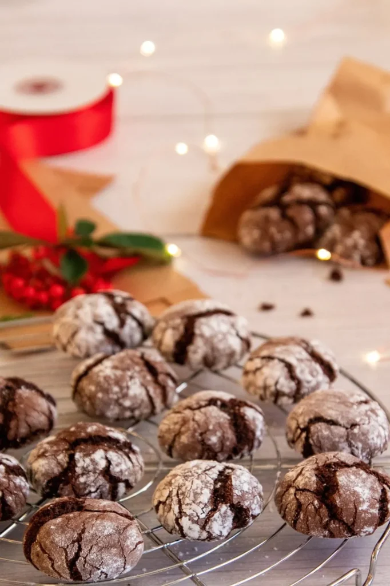
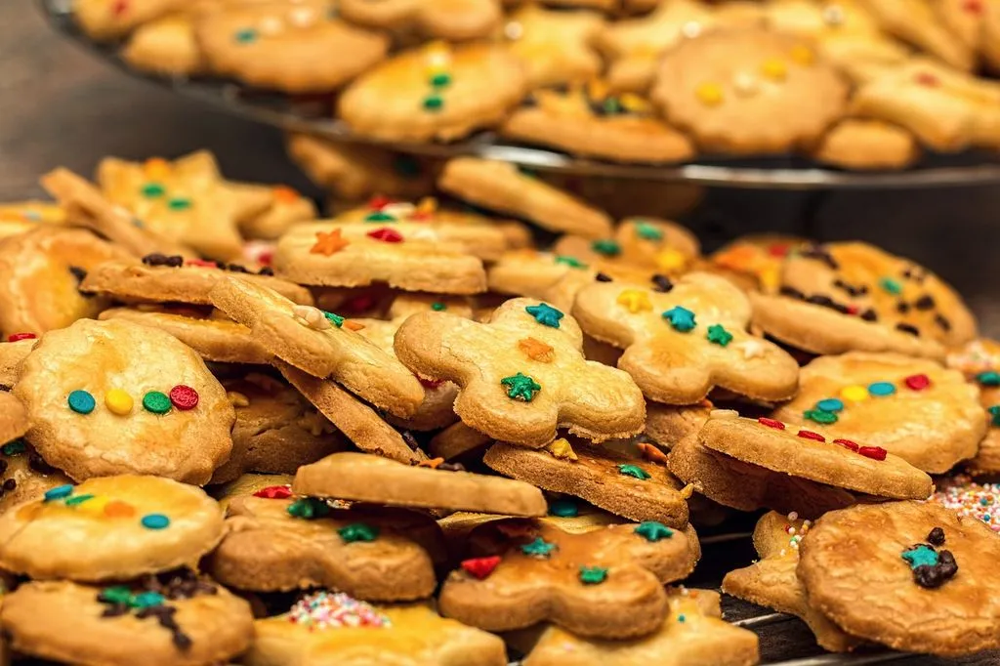
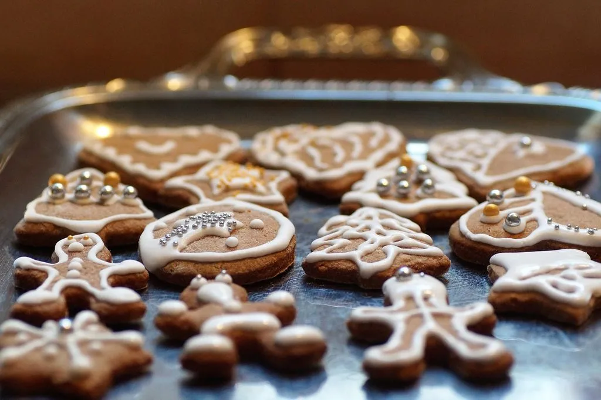
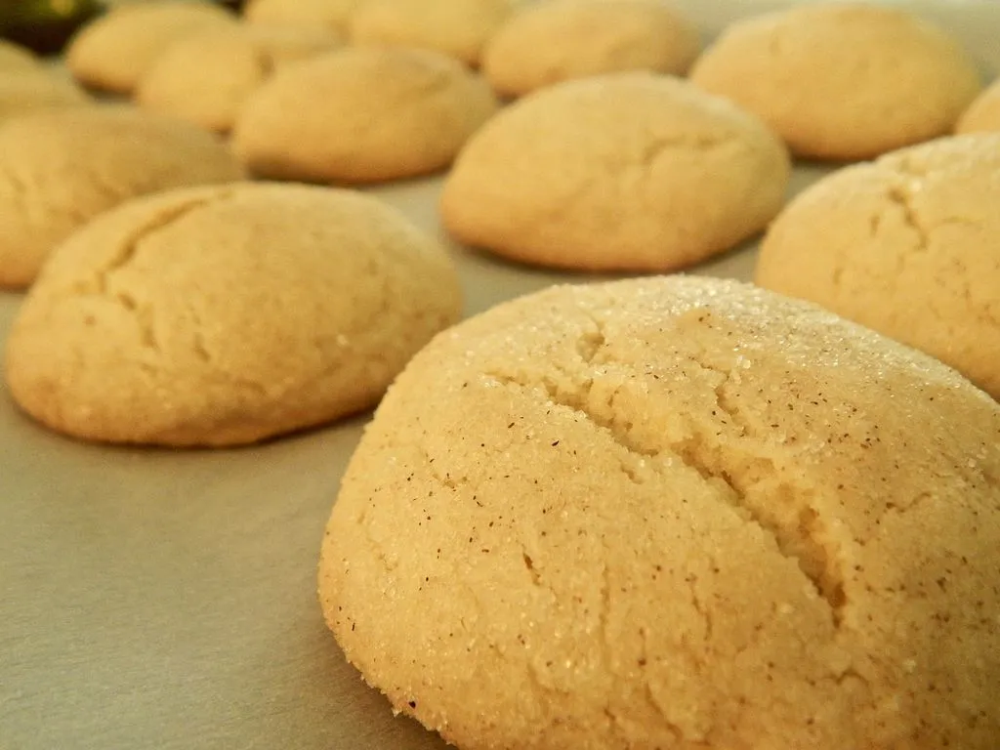
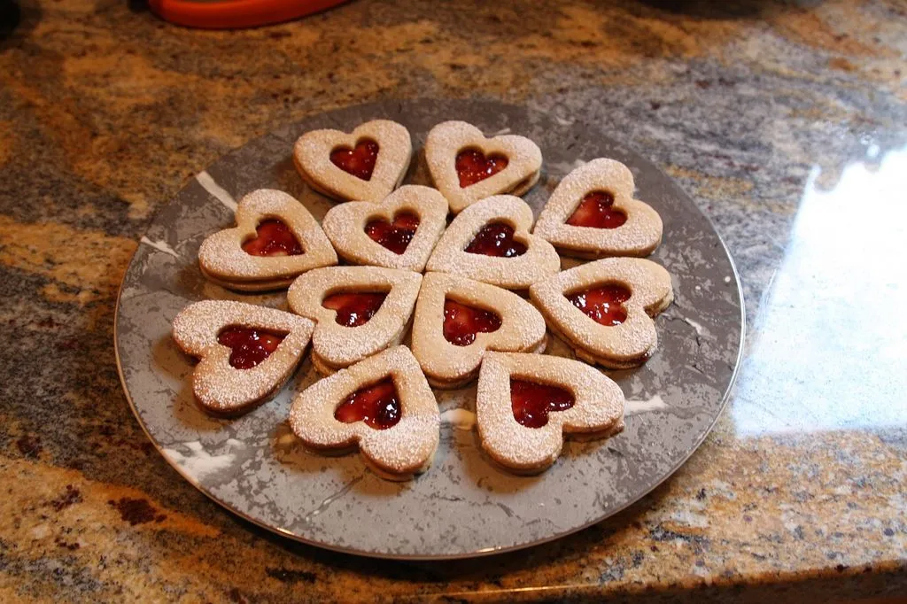
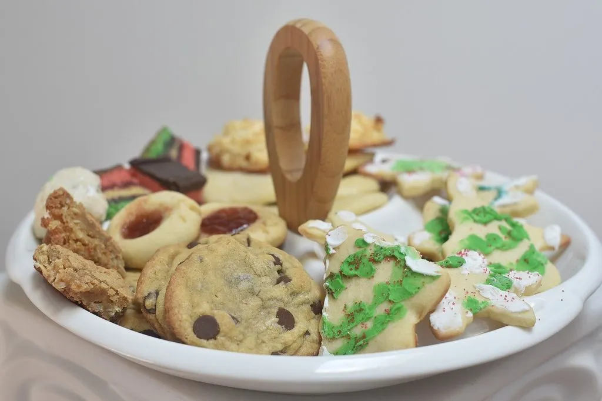

Top 10 Classic Christmas Cookie Recipes for Holiday Baking
The holiday season wouldn’t be complete without a delightful array of Christmas cookies. From the sweet and simple to the rich and spiced, Christmas cookies bring joy and warmth to our hearts. In this article, we’re going to explore the top 10 classic Christmas cookie recipes that have been cherished for generations. These cookies aren’t just delicious; they are the embodiment of tradition and love.
The importance of classic Christmas cookie recipes
During the holiday season, one of the most cherished traditions is baking and indulging in delicious Christmas cookies. These treats hold a special place in our hearts, as they bring warmth and joy to our homes and festivities. Whether it’s the aroma of cinnamon filling the air or the joy of decorating with loved ones, classic Christmas cookie recipes have become an essential part of every holiday celebration.
One of the reasons why classic Christmas cookie recipes hold such significance is their ability to evoke nostalgic memories. As we bite into a gingerbread man or a sugar cookie, we are transported back to a time when we were children, eagerly waiting for Santa Claus. These recipes have been passed down from generation to generation, carrying with them the stories and traditions of those who came before us. They connect us to our roots and create a sense of belonging and continuity. In a world where everything seems to change so rapidly, these recipes provide us with a comforting link to our past.
Classic Christmas cookie recipes are also a way for families and friends to bond during the holiday season. The act of getting together in the kitchen to bake and decorate cookies brings people closer. It provides an opportunity to share stories and laughter while creating something delicious together. The process of measuring ingredients, rolling out dough, and cutting out festive shapes fosters a sense of camaraderie and teamwork. And of course, the best part is devouring the fruits of your labor together, as you exchange smiles and compliments over warm cookies and mugs of hot cocoa.
Another important aspect of classic Christmas cookie recipes is their versatility. From gingerbread men to sugar cookies and classic chocolate chip, there is a recipe to suit everyone’s taste. These cookies can be customized and adapted to accommodate dietary restrictions or personal preferences. Whether you’re vegan, gluten-free, or simply enjoy a unique flavor combination, there is a classic Christmas cookie recipe out there for you. This inclusivity ensures that everyone can participate in the joy of baking and enjoying these festive treats.
Furthermore, classic Christmas cookie recipes serve as a form of artistic expression. The simple act of decorating these cookies allows us to showcase our creativity and imagination. From frosting and sprinkles to edible glitter and royal icing, the possibilities are endless. These cookies become not only a treat for the taste buds but also a feast for the eyes. They can be turned into edible works of art that are guaranteed to impress and delight.
Cookie recipe #1: Chocolate Crinkle Cookies
When it comes to classic Christmas cookie recipes, few can rival the timeless charm and universal appeal of chocolate crinkle cookies. Whether you’re a seasoned baker or just starting out in the kitchen, this delectable treat is guaranteed to bring joy to your loved ones during the holiday season and beyond. In this article, we will delve into the art of baking the perfect chocolate crinkle cookies, complete with a tried-and-true recipe that is bound to impress even the most discerning cookie connoisseurs.
Before we embark on our baking journey, it is important to note that the key to exceptional chocolate chip cookies lies in both the quality of ingredients and the precision of the baking process. Investing in high-quality cocoa powder, flour, butter, and vanilla extract is crucial. While it may be tempting to opt for cheaper alternatives, the difference in taste and texture will be evident in the final product.

Ingredients
1 cup unsweetened cocoa powder
2 cups granulated sugar
1/2 cup vegetable oil
4 large eggs
2 teaspoons vanilla extract
2 cups all-purpose flour
2 teaspoons baking powder
1/2 teaspoon salt
1 cup powdered sugar (for rolling)
Directions
In a large bowl, whisk together the cocoa powder, granulated sugar, and vegetable oil.
Beat in the eggs and vanilla.
In a separate bowl, mix the flour, baking powder, and salt.
Gradually add the dry ingredients to the wet ingredients and mix until a sticky dough forms.
Cover and chill the dough for at least 4 hours or overnight.
Preheat your oven to 350°F (175°C) and line baking sheets with parchment paper.
Roll the dough into 1-inch balls, then roll in powdered sugar.
Place on the baking sheets and bake for 10-12 minutes, or until the cookies have crinkled and set.
Allow them to cool on the baking sheets for a few minutes before transferring to a wire rack to cool completely.
In conclusion, chocolate chip cookies are the epitome of comfort and nostalgia, making them the perfect treat for any occasion, especially during the festive season. By following this simple yet tried-and-true recipe, you can create a batch of cookies that will undoubtedly leave a lasting impression on your family and friends. So, don your apron, preheat your oven, and let the enticing aroma of freshly baked chocolate chip cookies fill your home this holiday season.
Cookie recipe #2: Sugar Cookies
The sugar cookie is a timeless favorite during the holidays. Its buttery, melt-in-your-mouth texture and ability to hold intricate shapes make it the perfect canvas for festive decorations.

Ingredients
1 cup unsalted butter, softened
1 cup granulated sugar
1 large egg
1 1/2 teaspoons vanilla extract
2 3/4 cups all-purpose flour
1 1/2 teaspoons baking powder
1/2 teaspoon salt
Directions
In a large bowl, cream together the butter and sugar until smooth.
Beat in the egg and vanilla.
In a separate bowl, combine the flour, baking powder, and salt.
Gradually add the dry ingredients to the wet ingredients and mix until the dough comes together.
Divide the dough in half and shape into disks. Chill for at least 1 hour.
Preheat your oven to 375°F (190°C).
Roll out the dough to your desired thickness and cut into festive shapes.
Bake for 8-10 minutes, or until the edges are lightly golden.
Let the cookies cool before decorating with icing and sprinkles.
Cookie recipe #3: Gingerbread Cookies
Gingerbread cookies are a quintessential holiday treat, with their spicy aroma and charming shapes. Decorate them with royal icing and let your creativity shine.

Ingredients
3 cups all-purpose flour
1 1/2 teaspoons ground ginger
1 1/2 teaspoons ground cinnamon
1/4 teaspoon ground cloves
1/4 teaspoon salt
3/4 teaspoon baking soda
1/2 cup unsalted butter, softened
1/2 cup granulated sugar
1 large egg
1/2 cup molasses
Directions
In a large bowl, whisk together the flour, ginger, cinnamon, cloves, salt, and baking soda.
In another bowl, beat the butter and sugar until fluffy.
Add the egg and molasses, and mix until well combined.
Gradually add the dry ingredients to the wet ingredients and mix until a dough forms.
Divide the dough into two discs, wrap in plastic, and chill for at least 2 hours.
Preheat your oven to 350°F (175°C).
Roll out the dough, cut into shapes, and bake for 10-12 minutes.
Allow the cookies to cool before decorating with royal icing.
Cookie recipe #4: Snickerdoodle Cookies
Snickerdoodles, with their cinnamon-sugar coating and soft, chewy centers, are a crowd-pleaser. This classic recipe is sure to become a family tradition.

Ingredients
1 1/2 cups granulated sugar
1/2 cup unsalted butter, softened
1/2 cup shortening
2 large eggs
2 3/4 cups all-purpose flour
2 teaspoons cream of tartar
1 teaspoon baking soda
1/4 teaspoon salt
2 tablespoons granulated sugar
2 teaspoons ground cinnamon
Directions
Preheat your oven to 400°F (200°C).
In a large bowl, cream together 1 1/2 cups of sugar, butter, shortening, and eggs until well blended.
In a separate bowl, mix the flour, cream of tartar, baking soda, and salt.
Gradually add the dry ingredients to the wet ingredients and mix until the dough comes together.
In a small bowl, combine the 2 tablespoons of sugar and the ground cinnamon.
Shape the dough into 1-inch balls, roll in the cinnamon-sugar mixture, and place on a baking sheet.
Bake for 8-10 minutes or until the edges are lightly golden.
Cookie recipe #5: Chocolate Peppermint Cookies
Indulge in the rich flavors of chocolate and peppermint with these cookies. They’re perfect for those who adore the combination of sweet and refreshing.
Ingredients
1 cup unsalted butter, softened
1 cup granulated sugar
1 large egg
1 teaspoon peppermint extract
2 cups all-purpose flour
1/2 cup unsweetened cocoa powder
1/4 teaspoon salt
1/2 cup crushed peppermint candies
Directions
In a large bowl, cream together the butter and sugar until light and fluffy.
Beat in the egg and peppermint extract.
In a separate bowl, whisk together the flour, cocoa powder, and salt.
Gradually add the dry ingredients to the wet ingredients and mix until a dough forms.
Gently fold in the crushed peppermint candies.
Preheat your oven to 350°F (175°C).
Drop rounded tablespoons of dough onto a baking sheet.
Bake for 10-12 minutes, or until set. Let them cool on the baking sheet before transferring.
Cookie recipe #6: Linzer Cookies
Linzer cookies are as beautiful as they are delicious. These buttery, almond-based treats with jam-filled centers add an elegant touch to your holiday spread.

Ingredients
1 cup unsalted butter, softened
2/3 cup granulated sugar
2 large egg yolks
1 teaspoon vanilla extract
2 cups all-purpose flour
1/2 teaspoon ground cinnamon
1/2 cup raspberry jam
Confectioners’ sugar (for dusting)
Directions
In a large bowl, beat the butter and sugar until creamy.
Beat in the egg yolks and vanilla.
In a separate bowl, whisk together the flour and cinnamon.
Gradually add the dry ingredients to the wet ingredients and mix until a soft dough forms.
Divide the dough in half, shape into disks, and chill for at least 1 hour.
Preheat your oven to 350°F (175°C).
Roll out one disk of dough and cut into rounds and stars.
Cut a small hole in the center of half the cookies.
Bake for 12-15 minutes, or until the edges are lightly golden.
Allow the cookies to cool, then spread jam on the whole cookies and top with the cut-out ones.
Dust with confectioners’ sugar.
Cookie recipe #7: Thumbprint Cookies
Thumbprint cookies are versatile and open to various fillings, from jams to chocolate. They’re fun to make and even more enjoyable to eat.

Ingredients
1 cup unsalted butter, softened
2/3 cup granulated sugar
2 large egg yolks
2 teaspoons vanilla extract
2 cups all-purpose flour
1/4 teaspoon salt
1/2 cup fruit preserves (e.g., raspberry, strawberry)
Directions
In a large bowl, beat the butter and sugar until creamy.
Beat in the egg yolks and vanilla.
In a separate bowl, combine the flour and salt.
Gradually add the dry ingredients to the wet ingredients and mix until a dough forms.
Preheat your oven to 325°F (165°C).
Shape the dough into 1-inch balls and place on a baking sheet.
Use your thumb or a spoon to make an indentation in the center of each cookie.
Fill each indentation with fruit preserves.
Bake for 12-15 minutes, or until the edges are lightly golden.
Allow the cookies to cool on a wire rack.
Cookie recipe #8: Pecan Sandies
Pecan sandies are all about simplicity and the wonderful flavor of pecans. These crumbly, nutty cookies are perfect for enjoying with a cup of tea.
Ingredients
1 cup unsalted butter, softened
1/2 cup powdered sugar
2 teaspoons vanilla extract
2 cups all-purpose flour
1/4 teaspoon salt
1 cup chopped pecans
Directions
In a large bowl, cream together the butter and powdered sugar until light and fluffy.
Beat in the vanilla extract.
In a separate bowl, combine the flour and salt.
Gradually add the dry ingredients to the wet ingredients and mix until the dough comes together.
Stir in the chopped pecans.
Preheat your oven to 325°F (165°C).
Shape the dough into 1-inch balls and place on a baking sheet.
Gently flatten each ball with a fork.
Bake for 12-15 minutes, or until the edges are lightly golden.
Let the cookies cool on a wire rack.
Cookie recipe #9: Almond Crescent Cookies
Almond crescent cookies are known for their delicate texture and nutty flavor. They practically melt in your mouth and are a delightful addition to your cookie collection.
Ingredients
1 cup unsalted butter, softened
1/2 cup granulated sugar
1 teaspoon almond extract
1 3/4 cups all-purpose flour
1/2 cup ground almonds
1/4 teaspoon salt
1/4 cup powdered sugar (for dusting)
Directions
In a large bowl, cream together the butter, sugar, and almond extract until well combined.
In a separate bowl, whisk together the flour, ground almonds, and salt.
Gradually add the dry ingredients to the wet ingredients and mix until a soft dough forms.
Preheat your oven to 350°F (175°C).
Shape the dough into crescent shapes and place on a baking sheet.
Bake for 12-15 minutes, or until they are set but not browned.
Allow the cookies to cool for a few minutes, then dust with powdered sugar.
Cookie recipe #10: Oatmeal Raisin Cookies

Ingredients
1 cup unsalted butter, softened
1 cup granulated sugar
1 cup brown sugar, packed
2 large eggs
1 teaspoon vanilla extract
1 1/2 cups all-purpose flour
1 teaspoon baking soda
1 teaspoon ground cinnamon
1/2 teaspoon salt
3 cups old-fashioned oats
1 cup raisins
Directions
In a large bowl, cream together the butter, granulated sugar, and brown sugar until light and fluffy.
Beat in the eggs and vanilla.
In a separate bowl, whisk together the flour, baking soda, cinnamon, and salt.
Gradually add the dry ingredients to the wet ingredients and mix until well combined.
Stir in the oats and raisins.
Preheat your oven to 350°F (175°C).
Drop rounded tablespoons of dough onto a baking sheet.
Bake for 10-12 minutes, or until the edges are lightly golden.
Let the cookies cool on the baking sheet for a few minutes before transferring them to a wire rack to cool completely.
Conclusion: Time to start baking
In conclusion, the significance of classic Christmas cookie recipes extends far beyond their mouth-watering taste. They bring back cherished memories, strengthen familial bonds, cater to individual preferences, and provide a platform for artistic expression. They have become more than just delicious treats; they have become an integral part of our holiday traditions. So, as the holiday season approaches, don’t forget to dust off those classic cookie recipes and embark on a baking adventure that will not only fill your stomachs but also warm your hearts.
These classic Christmas cookies will fill your home with the delightful scents of the holiday season and create cherished memories with your loved ones. Whether you’re decorating sugar cookies with your family or savoring the warmth of gingerbread, these recipes are the essence of holiday traditions. So, roll up your sleeves, preheat the oven, and let the holiday baking begin!